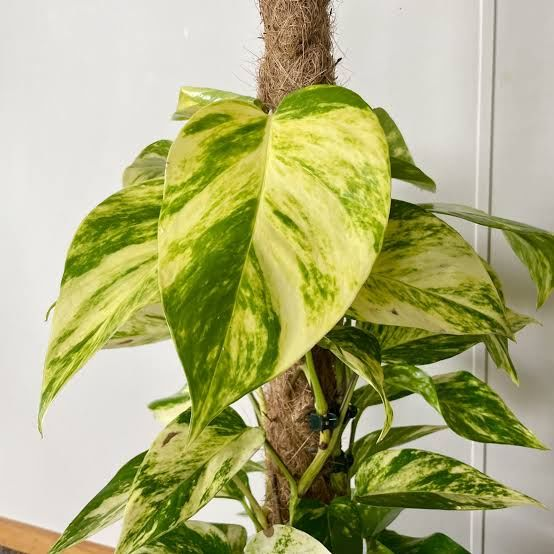
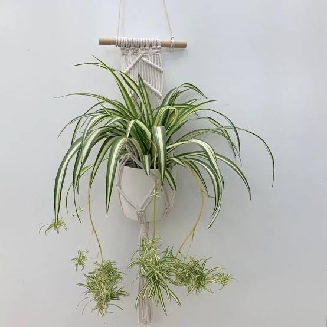
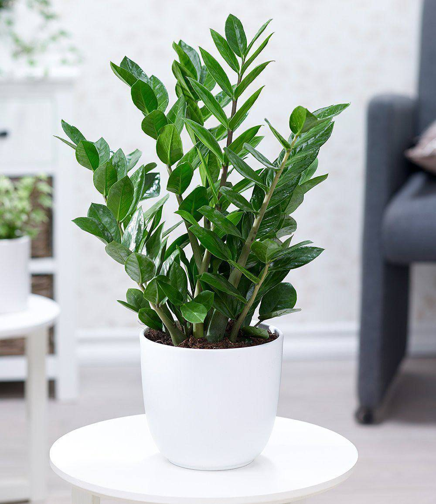
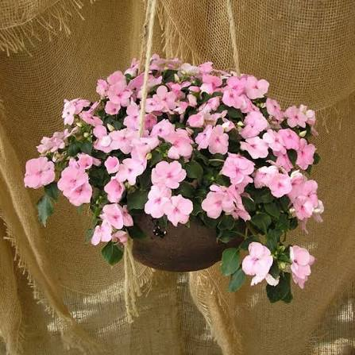
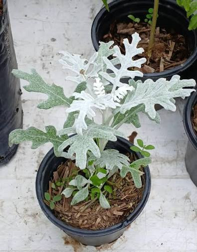
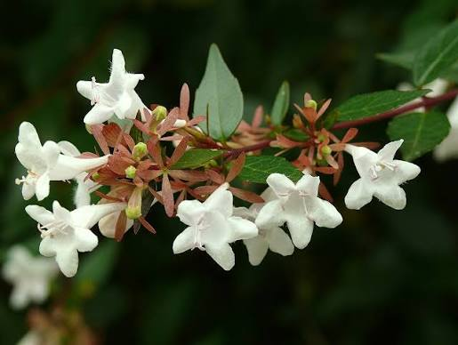

Interior
Potus
Planta trepadora de follaje brillante, ideal para ambientes con poca luz. Requiere riego moderado y tolera el descuido.
📄 Más informaciónExplorá nuestra selección de plantas de interior y exterior, con información detallada para cuidarlas y hacerlas florecer.
Seleccioná una categoría para ver las plantas disponibles.

Planta trepadora de follaje brillante, ideal para ambientes con poca luz. Requiere riego moderado y tolera el descuido.
📄 Más información
Con sus largas hojas verdes y blancas, la cinta decora macetas colgantes. Se adapta fácilmente a interiores luminosos.
📄 Más información
Resistente y elegante, prospera con luz indirecta y riegos espaciados. Perfecta para principiantes.
📄 Más información
Floración exuberante en tonos vibrantes, ideal para bordes y jardines. Prefiere lugares con sol y humedad constante.
📄 Más información
Conocida por sus hojas plateadas y aterciopeladas, aporta contraste visual en jardines. Tolera el sol pleno y el viento.
📄 Más información
Arbusto ornamental de floración prolongada, fragante y atractivo para polinizadores. Ideal para setos y jardines formales.
📄 Más informaciónConocé al responsable de este jardín digital.
Apasionado por la botánica y el cultivo de plantas, comparte información para que todos puedan tener un jardín saludable.
¿Tenés preguntas o sugerencias? Completá el formulario y te respondemos.